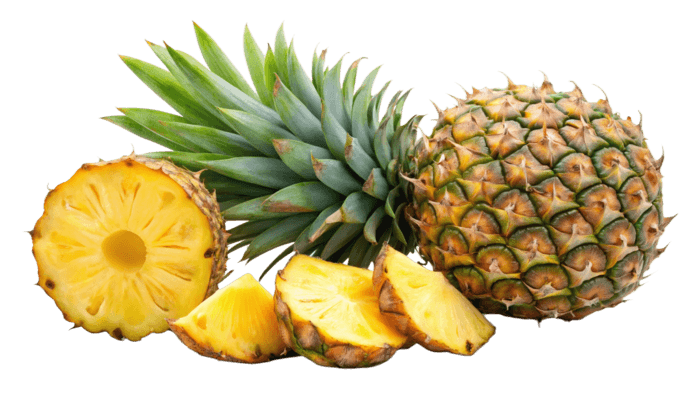
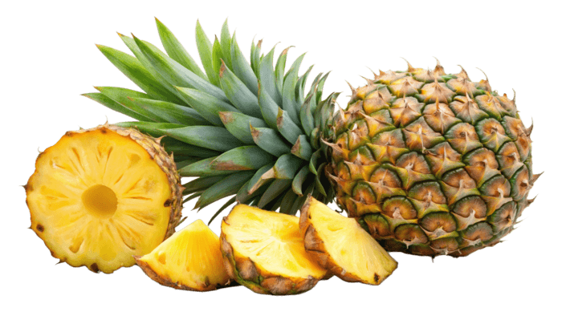
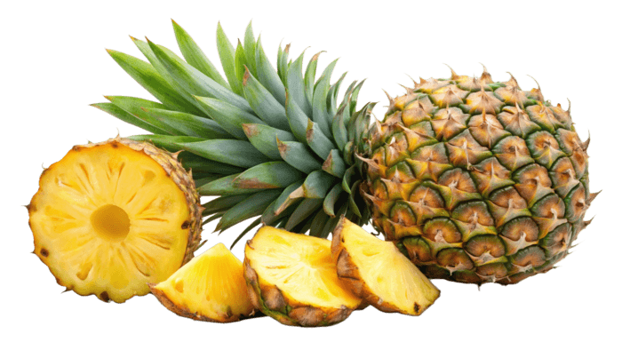

01
ANANAS FLAMBO

This handcrafted spirit offers a delightful blend of tropical flavors and comforting warmth. The infusion process begins with the rich sweetness of ripe pineapple, mingling with aromatic vanilla beans to create a creamy, exotic base. The addition of cinnamon sticks introduces a gentle spice, adding depth and a hint of warmth that perfectly complements the tropical notes. Fermented with care, this spirit captures the essence of an island paradise, balancing sweet, spicy, and smooth flavors for a unique, unforgettable taste experience. Perfect sipped neat, over ice, or as a tropical twist in cocktails.
This handcrafted spirit offers a captivating blend of fruity richness and warmth. The infusion process begins with the luscious sweetness of ripe grapes, blending with aromatic hints of vanilla to create a smooth, velvety base. The addition of a touch of cinnamon introduces a gentle spice, adding depth and a hint of warmth that perfectly complements the grape’s natural flavors. Carefully fermented, this spirit captures the essence of a vineyard paradise, balancing sweet, spicy, and rich notes for a one-of-a-kind, memorable taste experience. Ideal when sipped neat, over ice, or as a sophisticated twist in cocktails.